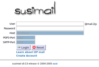
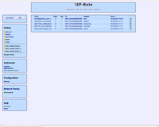
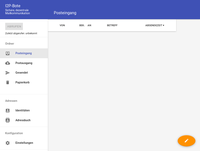
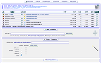

I2P
Dieser Artikel wurde für die folgenden Ubuntu-Versionen getestet:
Dieser Artikel ist größtenteils für alle Ubuntu-Versionen gültig.
Zum Verständnis dieses Artikels sind folgende Seiten hilfreich:
Installation von Programmen, optional
Archive entpacken, optional
 I2P
I2P  ist ein freies Softwareprojekt mit dem Ziel, ein anonymes bzw. pseudonymes Netzwerk zu schaffen. I2P ist die englische Abkürzung für Invisible Internet Project, zu deutsch etwa Unsichtbares Internet Projekt. Ziel von I2P ist es, eine einfache Übertragungsschicht mit dem Anspruch der Anonymität und Sicherheit für unterschiedliche Applikationen zur Verfügung zu stellen.
ist ein freies Softwareprojekt mit dem Ziel, ein anonymes bzw. pseudonymes Netzwerk zu schaffen. I2P ist die englische Abkürzung für Invisible Internet Project, zu deutsch etwa Unsichtbares Internet Projekt. Ziel von I2P ist es, eine einfache Übertragungsschicht mit dem Anspruch der Anonymität und Sicherheit für unterschiedliche Applikationen zur Verfügung zu stellen.
I2P ist wie das bekanntere TOR ein Darknet, welches parallel zum normalen Internet existiert. Es ist möglich, aus dem I2P-Netz normale Internet-Seiten über Outproxies anzusurfen, dies wird aber nicht empfohlen. Das Netzwerk selbst ist nachrichtenbasiert (wie IP), bietet aber auch eine Bibliothek an, die das Streaming von Daten erlaubt und TCP ähnelt. Die Kommunikation ist an beiden Enden verschlüsselt. Dazu werden insgesamt vier Schichten zur Verschlüsselung je Paket verwendet. Auch die Empfangspunkte sind wiederum durch Verschlüsselungsverfahren geschützt (größtenteils besteht diese aus einem Paar öffentlicher Schlüssel).

I2P bietet eine anonyme, via Peer-To-Peer verteilte Kommunikationsschicht, die dafür entworfen wurde, alle herkömmlichen Protokolle (z.B. Usenet, E-Mail, IRC, HTTP, Telnet, XMPP (Jabber), usw.), genauso wie die traditionellen verteilten Anwendungen (z.B. Squid oder auch DNS) zu unterstützen. Es sind verschiedene Dienste in Entwicklung wie z.B. Syndie (authentifizierbarer und anonymer Blog), anonyme E-Mail, anonymes IRC, eepsites und anonymes Filesharing.
Wenn I2P installiert und gestartet wird, läuft auf dem Rechner ein Java-Programm. Dieses Programm wird "I2P-Router" genannt, läuft im Terminal und besitzt keine grafische Oberfläche. Die Bedienung und Konfiguration erfolgt stattdessen per Weboberfläche in einem beliebigen Browser. Folgende anonyme Dienste bietet ein laufender I2P-Router:
Webseiten mit der Domain .i2p ansurfen (HTTP)
E-Mails innerhalb des I2P-Netzes (POP3, Webmail)
Filesharing (Bittorrent, IMule)
uvm.
Entwicklungsgeschichte¶
Die Version 0.9.7 (Jul. 2013) enthält zusätzliche Schutzmaßnahmen gegen Angriffe
 . Allerdings ist noch viel zu tun, um Sybil-Attacken und Traffic-Analysen bei Floodfill-Routern entgegenzuwirken.
. Allerdings ist noch viel zu tun, um Sybil-Attacken und Traffic-Analysen bei Floodfill-Routern entgegenzuwirken.Seit Version 0.9.8 wird IPv6 unterstützt und auch bevorzugt genutzt, sofern man eine öffentliche IPv6-Adresse vom Provider bekommt.
0.9.14 (Sept. 2014) enthält kritische Fehlerbehebungen für XSS und Remote-Ausführung von Sicherheitslücken. Außerdem ist eine schnellere und sicherere Methode für das erstmalige Booten (reseed) in das I2P-Netzwerk enthalten.
Mit 0.9.16 (Nov. 2014) beginnt die Migration der Signaturen von DSA nach ECDSA. Kryptografische ECDSA-Signaturen erhöhen die Sicherheit und damit die Anonymität. Client-Tunnel für Standard, IRC und SOCKS-IRC verwenden nun standardmäßig ECDSA-Signaturen.
Achtung!
Es soll nochmal ausdrücklich daran erinnert werden, daß das I2P-Netzwerk noch relativ klein und angreifbar ist (Stand: 06/2015). Es gibt derzeit keine Lösung für hundertprozentige Sicherheit. Die Nutzung erfolgt daher auf eigenes Risiko. Die I2P-Entwickler arbeiten aktuell an weiteren Verbesserungen. Je mehr mitmachen und je größer das I2P-Netzwerk wird, desto besser wird die Anonymität des Einzelnen.
Das Verschleiern der eigenen IP-Adresse ist zwar sehr wichtig, genügt aber noch nicht, um wirklich anonym im Internet unterwegs zu sein. Mehr Informationen sind im Artikel Sicherheit/Anonym Surfen zu finden.
Voraussetzungen¶
Das Programm erfordert eine Java-Laufzeitumgebung (JRE), welche mindestens der Version 1.6 (Java 6) oder neuer entsprechen sollte. Ob Java bereits installiert ist, kann im Terminal überprüft werden [1]:
java -version
Installation¶
Die verschiedenen Installationsvarianten werden in einem gesonderten Artikel beschrieben:
Grundlagen¶
Hinweis:
Manche Links in diesem Artikel sind Links zu Servern im I2P-Netzwerk. Sie enden immer auf .i2p. Um diese Seiten erreichen zu können, muss I2P installiert und aktiv sein.
Zum sicheren anonymen Surfen auf I2P-Webseiten sollte man nicht den Standard Internet-Browser benutzen, sondern einen zweiten Browser installieren. Den Standard Internet-Browser nimmt man weiterhin zum normalen Surfen; den Zweit-Browser ausschließlich für I2P-Webseiten, ebenso wie für alle Seiten der Web-Oberfläche des I2P-Routers.
Alternativ kann ein zweites Profil in Firefox oder Chromium erstellen:
Firefox: Mozilla Profilmanager
Chromium: Neues Browser-Nutzerprofil erstellen
Zusätzlich stellen Cookies, Javascript und Flash, kurz alle aktiven Inhalte, eine Gefahr für die eigene Anonymität dar. Durch geeignete Browser-Einstellungen oder Plugins wie z.B. NoScript für Firefox können diese vermieden werden.
Kurz zusammengefasst:
Verwende zum Surfen im I2P-Netz nur einen Zweit-Browser
Nutze den Zweit-Browser nicht für normales Surfen
Gebe in I2P niemals echte Daten oder Namen an
Benutze andere Namen, Logins und Passwörter für I2P-Webseiten und Dienste
Hinweis:
Es ist nicht empfehlenswert - auf welche Art auch immer - dass Seiten mit der Endung ".i2p" automatisch durch den I2P-Proxy geleitet werden. Das stellt ein Sicherheitsrisiko dar! Wenn man nämlich eine I2P-Webseite aufruft, die z.B. auf weitere Grafiken (z.B. 1 Pixel große Bilder) aus dem "echten" Internet verweist, kann man durch die zeitliche Korrelation die IP-Adresse eines Surfers herausfinden.
Performance im I2P-Netz¶
Bei I2P tröpfeln die Daten verschlüsselt durch eine Vielzahl von anderen Rechnern mit I2P-Routern, bevor sie den eigenen Rechner erreichen. Das Surfen ist daher prinzipbedingt langsamer als im normalen Internet. Das gilt sowohl für die Datenrate als auch die Latenz. Dies ist der "Preis" für mehr Anonymität.
Man kann sich selbst und anderen I2P-Nutzern helfen, indem der I2P-Router möglichst lange laufen lässt. Nach dem erstmaligen Start kann es bis zu 30 Minuten dauern, bis I2P ein funktionierendes Peer-Verzeichnis aufgebaut hat und voll funktionstüchtig ist. Auch nach einem Reboot oder einer längeren Offline-Zeit des Servers kann es genauso lange dauern, bis alle I2P-Dienste wieder flott laufen.
Erste Schritte im I2P-Netz¶
Der Zweit-Browser (siehe oben) wird für I2P wie folgt konfiguriert: in der Proxy-Konfiguration des Browsers wird als HTTP-Proxy 127.0.0.1 und als Port 4444 eingestellt. Der komplette Datenaustausch über den Browser erfolgt nun anonym und verschlüsselt.
I2P ist ein eigenes Darknet. Die Top-Level-Domain dieses Netzwerkes besitzt die Endung .i2p. Server mit dieser Domain-Endung können ausschließlich aus dem I2P-Netzwerk erreicht werden. Einen Einstieg zu beliebten I2P-Webseiten bietet die Web-Oberfläche des I2P-Routers unter der Adresse http://localhost:7657/home.
Das I2P-Webmail- und das I2P-Torrent-Programm werden ebenfalls im Browser geöffnet: http://localhost:7657/susimail/susimail und http://localhost:7657/i2psnark/ .
Man kann über I2P auch normale Webserver wie www.google.de erreichen. Es sollte jedoch bedacht werden, dass Aufrufe von normalen Internet-Seiten durch einen Outproxy laufen. Der Betreiber des Outproxys hat dadurch z.B. die Möglichkeit, Passwörter mitzulesen. Mehr dazu im Artikel Anonym Surfen.
Serverdienst¶
Die Steuerung des I2P-Dienstes kann über die Kommandozeile erfolgen [1]:
sudo service i2p OPTION
Optionen zur Steuerung des Dienstes sind:
| Optionen für I2P als Dienst | |
| Befehl | Beschreibung |
console | Launch in the current console |
start | Als Dienst im Hintergrund starten |
stop | Eine laufende Instanz beenden. Diese Option sollte nach Möglichkeit vermieden bzw. graceful zu Beenden des Dienstes genutzt werden. |
graceful | Statt mit stop sollte ein laufender I2P-Router besser mit graceful beendet werden, was allerdings ca. 10 Minuten benötigt, um alle offenen I2P-Tunnel ordentlich zu schließen |
restart | Dienst neu starten |
condrestart | Nur neu starten, wenn der Dienst bereits läuft |
status | Den aktuellen Status abfragen |
install | Dienst beim Systemstart aktivieren |
remove | Dienst aus dem Systemstart entfernen |
dump | Einen Speicherauszug einer laufenden Instanz anfordern |
Konfiguration¶
Die I2P-Konfiguration wird im Verzeichnis ~/.i2p des I2P-Benutzers gespeichert. Die Logfiles wrapper.log und log-router-xy.txt finden sich je nach Installationsart in /tmp oder /var/log/i2p. Die Logs können auch auf der I2P-Router Web-Oberfläche eingesehen werden: http://localhost:7657/logs
Wenn I2P gestartet wurde, kann man dessen Konfigurationsmenü im Browser über die Adresse: http://127.0.0.1:7657 erreichen. Viel muss nicht angepasst werden. Allerdings sollte die Bandbreite, die man dem Netzwerk zur Verfügung stellen möchte, unter dem Punkt "configuration" (ganz links oben) festlegen kann und passend zum eigenen Internet-Anschluss gewählt werden. Die UDP- und TCP-Ports wurden zufällig von I2P ausgewählt. Diese Ports sollten in lokalen Software- und Hardware-Firewalls (z.B. im Router) wenn möglich freigegeben werden (udp+tcp).
Das Nächste, was man vielleicht einstellen oder sich auch nur mal anschauen möchte, sind die einzelnen Tunnel, die I2P bereit stellt. Dort gelangt man über das Panel "I2PTunnel" (oben) hin. Im Moment stellt I2P Client-Tunnel für HTTP, IRC, MTN, POP3 und SMTP bereit, welche außer MTN alle standardmäßig aktiviert sind. Mit einem Mausklick auf "Stop" oder "Start" kann man einen Tunnel starten oder beenden, falls man eines dieser Feature nicht braucht. Außerdem kann man hier sehen, auf welchen Ports sie laufen.
Als Server-Tunnel stellt I2P bis jetzt nur einen HTTP-Webserver bereit. Dieser kann ebenfalls mit einem Mausklick aktiviert werden, um einen eigenen Webserver im I2P-Netzwerk zu eröffnen.
I2P-Anwendungen¶
E-Mail¶
|  |
| I2P-Mail im Webbrowser |
Um ein anonymes E-Mail-Konto zu errichten, muss man sich auf der Seite http://hq.postman.i2p/ unter dem Punkt "Creating a mailbox" registrieren. Das Passwort darf dabei nur aus Buchstaben und Zahlen bestehen und maximal 12 Zeichen besitzen. Da die Konten über einen Cron-Job erzeugt werden, kann es nach der Registrierung bis zu 15 Minuten dauern, bis das E-Mail-Konto benutzt werden kann. Die E-Mail-Adresse, die man erhält, lautet dann kontoname@mail.i2p. Nach 100 Tagen Inaktivität wird das E-Mail-Konto gelöscht und man kann pro Tag beliebig viele E-Mails an andere I2P-E-Mail-Adressen versenden, aber nur an 20 unterschiedliche normale E-Mail-Accounts. Dies wurde so eingerichtet, um vor Spammern sicher zu sein.
Über die @mail.i2p-Adresse kann man von einem anderen I2P-Benutzer auch erreicht werden. Versendet man eine E-Mail an einen anderen I2P-Benutzer, lautet die Adresse bei dem Empfänger ebenfalls @mail.i2p. Versendet man eine E-Mail an ein normales, nicht-I2P-E-Mail-Konto, wird die Adresse umgeschrieben in @i2pmail.org. Der Nutzer eines normalen E-Mail-Kontos kann einem dann über die @i2pmail.org-Adresse auch antworten.
Die Einstellungen des E-Mail-Accounts kann man unter http://hq.postman.i2p/?page_id=14 erreichen.
Nun kann man entweder über http://127.0.0.1:7657/susimail/susimail das Susi-Webmail-Interface, welches mit I2P installiert wird, das Postfach erreichen oder man konfiguriert das vorhandene Standard-E-Mail-Programm für die Benutzung von I2P.
Dazu gibt man als POP3-Server-Adresse 127.0.0.1 und als Port 7660 an. Als SMTP-Server-Adresse nimmt man wieder 127.0.0.1 und als Port diesmal 7659. Die Verbindung wird ganz normal, also ohne SSL/TLS aufgebaut. Das ist kein Sicherheitsproblem, da die E-Mail nur vom E-Mail-Programm zu dem auf dem eigenen Rechner installierten I2P-Dienst gesandt wird. Von da an, bis zum Mailserver erfolgt die Verbindung über I2P und damit sowieso komplett verschlüsselt und anonym.
Wichtig bei der Verwendung des eigenen E-Mail-Programms ist, daran zu denken, dass ein E-Mail-Programm in den Header einer E-Mail Daten schreibt, die unter Umständen Rückschlüsse auf den Versender geben (z.B. das verwendete E-Mail-Programm, der Hostname des Senders, einen Time-stamp, etc). Das vorhandene E-Mail-Programm sollte also so konfiguriert werden, dass diese Daten nicht preisgegeben werden. Ein Vergleich von ein paar wenigen E-Mail-Clienten und was man umstellen muss, damit man sie anonym benutzen kann, ist unter http://hq.postman.i2p/?page_id=9 zu finden.
SecureMail/I2P-Bote¶
|  |
| I2P-Bote 0.2.x |
Eine neue Entwicklung ist SecureMail/I2P-Bote, ebenfalls ein anonymer E-Maildienst, der auf dem I2P-Netz aufsetzt. Im Gegensatz zu dem E-Mail-Konto bei http://hq.postman.i2p ist I2P-Bote ein dezentraler E-Mail-Dienst. Er funktioniert über das I2P-Netz, es gibt kein zentrales Postfach und es ist keine Anmeldung/Registrierung nötig.
Das Projekt ist noch relativ jung und in der Entwicklungsphase. Es bietet folgende Funktionen:
Bedienung über die Weboberfläche der Konsole des I2P-Routers (Webmail)
Übersichtliche Ordner für Posteingang und Postausgang
Erzeugen von eigenen SecureMail-Adressen (Identitäten)
Senden und Empfangen von E-Mails (SMTP/POP3) sowie kleinen Anhängen (< 500 KiB)
Installation¶
I2P-Bote kann als Erweiterung über http://plugins.i2p/plugins/i2pbote/ heruntergeladen werden. Nachdem man die Datei i2pbote.su3 gespeichert hat, kann man sie in der I2P-Routerkonsole via http://localhost:7657 bei "Einstellungen -> Klienten -> Zusatzprogramminstallation aus Datei" auswählen. Dann weiter mit der Schaltfläche "Zusatzprogramm aus Datei installieren".
Hinweis:
Mit Version 0.3 wurde die Unterstützung von IMAP deaktiviert. Wird diese zwingend benötigt, sollte man bei einer älteren Version (0.2.x) bleiben. Bitte auch die anderen Installations-Hinweise beachten.
|  |
| I2P-Bote 0.4.x |
Nach der Installation erscheint in der Router-Konsole ein neuer Link "Sichere.Mail" (http://localhost:7657/i2pbote/index.jsp) und es öffnet sich das Programm in einem neuen Fenster (bzw. Reiter). Nun kann man eine (oder auch mehrere) Identitäten (SecureMail-Adressen) erzeugen: Man klickt links auf "Identitäten" und dann auf "Neue Identität". Der "Öffentlicher Name" ist frei wählbar.
Im "Adressbuch" kann man bestimmte bekannte Identitäten hinterlegen, da der "Öffentliche Name" frei wählbar, ggf. auch mehrfach genutzt werden kann und somit kein exaktes Kriterium ist.
Siehe auch:
http://bote.i2p(ehemalshttp://i2pbote.i2p)
IRC¶
Um in anonymen IRC-Chats zu chatten, muss man einfach im IRC-Client als Server-Adresse 127.0.0.1 angeben und als Port 6668. Nun kann man mit dem Client zu den i2p-IRC-Servern verbinden und mit anderen I2Plern anonym und verschlüsselt chatten.
Eigener anonymer Webserver¶
Will man einen eigenen im I2P-Netzwerk erreichbaren Webserver einrichten, findet man nach dem Starten des Servers über den "Preview"-Button eine komplette Schritt-für-Schritt Anleitung zum Einrichten eines solchen.
Filesharing¶
Man kann über I2P auch Filesharing betreiben. Es gibt z.B. ein I2P-internes eMule/amule, genannt iMule. Außerdem gibt es I2P-internes Bittorrent, das mit verschiedenen Programmen genutzt werden kann. Es ist allerdings nicht möglich, bekannte Standard-Bittorrent-Software (Vuze, Transmission,...) ohne weiteres zu benutzen, höchstens spezielle Anpassungen davon. So gibt es eine Transmission-Variante speziell für I2P oder ein Azureus-Plugin, das aber nicht sehr stabil ist. Weitere I2P-Bittorrent-Clienten werden unter http://echelon.i2p/ aufgelistet.
Es gibt auch I2P-Bittorrent-Tracker, der wichtigste ist http://tracker.postman.i2p oder http://tracker.postman.i2p.tin0.net . Man sollte jedoch immer beachten, dass I2P zwar anonym und sicher ist, die jedoch mit Geschwindigkeitseinbußen verbunden ist. Als Seeder und Leecher kommen natürlich nur I2P-Teilnehmer in Frage. Es gibt also im ganzen I2P-Bittorrent-Netzwerk weniger Teilnehmer als ein einzelnes populäres Torrent im "normalen" Bittorrent haben kann.
I2PSnark¶
|  |
| Torrents in I2PSnark verwalten |
I2PSnark ist ein Bittorrent-Client, der bereits im I2P-Router enthalten ist. Man muss also nichts weiter einrichten. Man erreicht I2PSnark im Webinterface des Routers: http://localhost:7657/i2psnark . Oben links befinden sich einige Links zu bekannten I2P-Bittorrent-Trackern. Um Torrents in I2PSnark zu laden, kann man die .torrent-Dateien entweder direkt in seinen I2PSnark-Ordner im I2P-Installations-Verzeichnis kopieren oder in der Detailansicht eines Torrents auf Postman's Tracker mit Rechtsklick auf den Dateinamen die Link-Adresse kopieren und in I2PSnark bei "Add Torrent" einfügen. Danach wird der Torrent automatisch heruntergeladen und gestartet. Inzwischen werden auch Magnet-Links unterstützt. Die Torrent-Dateien, sowie heruntergeladenen Dateien landen standardmäßig im Ordner .i2p/i2psnark im Homeverzeichnis.
Robert¶
Hinweis!
Fremdsoftware kann das System gefährden.
Robert ist ebenfalls ein Bittorrent-Client, der wesentlich mehr bietet als I2PSnark und auch deutlich schnellere Down- und Uploads ermöglicht. Vor der Installation muss das folgende Paket installiert werden [2]:
python-wxversion (Version 2.8.10, )
 mit apturl
mit apturl
Paketliste zum Kopieren:
sudo apt-get install python-wxversion
sudo aptitude install python-wxversion
Dann kann man das Programm von http://echelon.i2p/robert beziehen. Das heruntergeladene Archiv ist zu entpacken [3] und die darin enthaltene Datei src/install auszuführen:
cd Robert-src/src/ ./install
Robert wird dann installiert und kann mit dem Befehl
Robert
aufgerufen werden.
Externe, I2P-kompatible Anwendungen¶
Syndie als Newsreader
Alle drei Anwendungen können über ein "Personal Packages Archiv" (PPA) installiert werden.
Adresszeile zum Hinzufügen des PPAs:
ppa:i2p.packages/i2p
Hinweis!
Zusätzliche Fremdquellen können das System gefährden.
Ein PPA unterstützt nicht zwangsläufig alle Ubuntu-Versionen. Weitere Informationen sind der  PPA-Beschreibung des Eigentümers/Teams i2p.packages zu entnehmen.
PPA-Beschreibung des Eigentümers/Teams i2p.packages zu entnehmen.
Damit Pakete aus dem PPA genutzt werden können, müssen die Paketquellen neu eingelesen werden.
iMule¶
Das Programm iMule ist ein amule-Klon speziell für das I2P-Netz. iMule selbst besitzt einen internen I2P-Router. Es wird aber empfohlen, auf den normalen I2P-Router zurückzugreifen, da dieser weniger Ressourcen verbraucht. Das Programm nutzt den Kademlia-Algorithmus. Sollte die voreingestellte nodes.dat nicht funktionieren, kann sie alternativ als http://echelon.i2p/imule/nodes.dat heruntergeladen werden.
Auf der Seite http://echelon.i2p/I2Pguide/imule.html findet man weitere Tipps und Tricks.
Die Installation erfolgt wahlweise über ein PPA oder manuell. Nach erfolgreicher Installation kann man iMule über den Menüeintrag "Internet -> iMule" starten.
PPA¶
iMule (ppa)
mit apturl
Paketliste zum Kopieren:
sudo apt-get install iMule
sudo aptitude install iMule
In der Konfiguration der I2P-Klienten (zu erreichen unter: http://localhost:7657/configclients) muss die "SAM-Anwendungsanbindung" gestartet sein. Bei einer Änderung muss der I2P-Router neu gestartet werden.
Manuell¶
Von http://echelon.i2p/ werden
DEB-Pakete  angeboten.
Die unterstützten Ubuntuversionen und Architekturen werden aufgelistet.
Nachdem man sie für die korrekte Ubuntuversion und Architektur geladen hat, müssen DEB-Pakete noch installiert werden.
angeboten.
Die unterstützten Ubuntuversionen und Architekturen werden aufgelistet.
Nachdem man sie für die korrekte Ubuntuversion und Architektur geladen hat, müssen DEB-Pakete noch installiert werden.
Hinweis!
Fremdpakete können das System gefährden.
Syndie¶
Syndie ("Syndication") ist ein auf Java basierender dezentraler Newsreader für I2P und Tor. Die Installation erfolgt wahlweise über ein PPA oder manuell.
Nach erfolgreicher Installation kann man das Programm bei Ubuntu-Varianten mit einem Anwendungsmenü über den Eintrag "Internet -> Syndie" starten.
PPA¶
syndie (ppa)
mit apturl
Paketliste zum Kopieren:
sudo apt-get install syndie
sudo aptitude install syndie
Manuell¶
Für die Installation wird die Datei syndie-installer-1.105b.bin.linuxXX.jar entsprechend der System-Architektur von der Projektseite syndie.de oder syndie.i2p benötigt.
Hinweis!
Fremdsoftware kann das System gefährden.
Die Datei führt man mit einem " -> Öffnen mit -> Java Runtime" aus oder gibt in einem Terminal ein:
-> Öffnen mit -> Java Runtime" aus oder gibt in einem Terminal ein:
java -jar syndie-installer-1.105b.bin.linuxXX.jar
I2P-Messenger¶
Der I2P-Messenger ist ein einfacher Instant Messenger mit grafischer Benutzeroberfläche auf Basis der plattformübergreifenden Bibliothek Qt. Als I2P-Protokoll (Schnittstelle) wird SAM verwendet. Der I2P-Messenger verbindet sich direkt über den I2P-Router mit dem jeweiligen Gesprächspartner, wobei die Kommunikationen in beiden Richtungen verschlüsselt werden. Quelle: ugha.i2p
Nach erfolgreicher Installation kann man den I2P-Messenger über den Menüeintrag "Anwendungen > Internet > I2P-Messenger" starten.
PPA¶
i2p-messenger (ppa)
mit apturl
Paketliste zum Kopieren:
sudo apt-get install i2p-messenger
sudo aptitude install i2p-messenger
In den Konfiguration der I2P-Klienten (zu erreichen unter http://localhost:7657/configclients) muss die "SAM-Anwendungsanbindung" gestartet sein. Bei einer Änderung muss der I2P-Router neu gestartet werden.
Problembehebung¶
Deinstallation¶
Bevor man I2P deinstalliert, sollte ein laufender Server zuerst beendet werden (entweder über die Routerkonsole oder via Kommandozeile). Wurde manuell installiert, kann man I2P über folgenden Befehl wieder deinstallieren:
java -jar ~/i2p/Uninstaller/uninstaller.jar
Wurde dagegen das PPA eingebunden, entfernt man zuerst die installierten Pakete und entfernt anschließend das PPA (siehe auch PPA entfernen).
Links¶
Extern¶
Das deutsche I2P-Handbuch
- I2P-Dokumentation (zum Großteil für Windows ausgelegt, teilweise deutlich veraltet)
- Erstellt mit Inyoka
-
 2004 – 2017 ubuntuusers.de • Einige Rechte vorbehalten
2004 – 2017 ubuntuusers.de • Einige Rechte vorbehalten
Lizenz • Kontakt • Datenschutz • Impressum • Serverstatus -
Serverhousing gespendet von